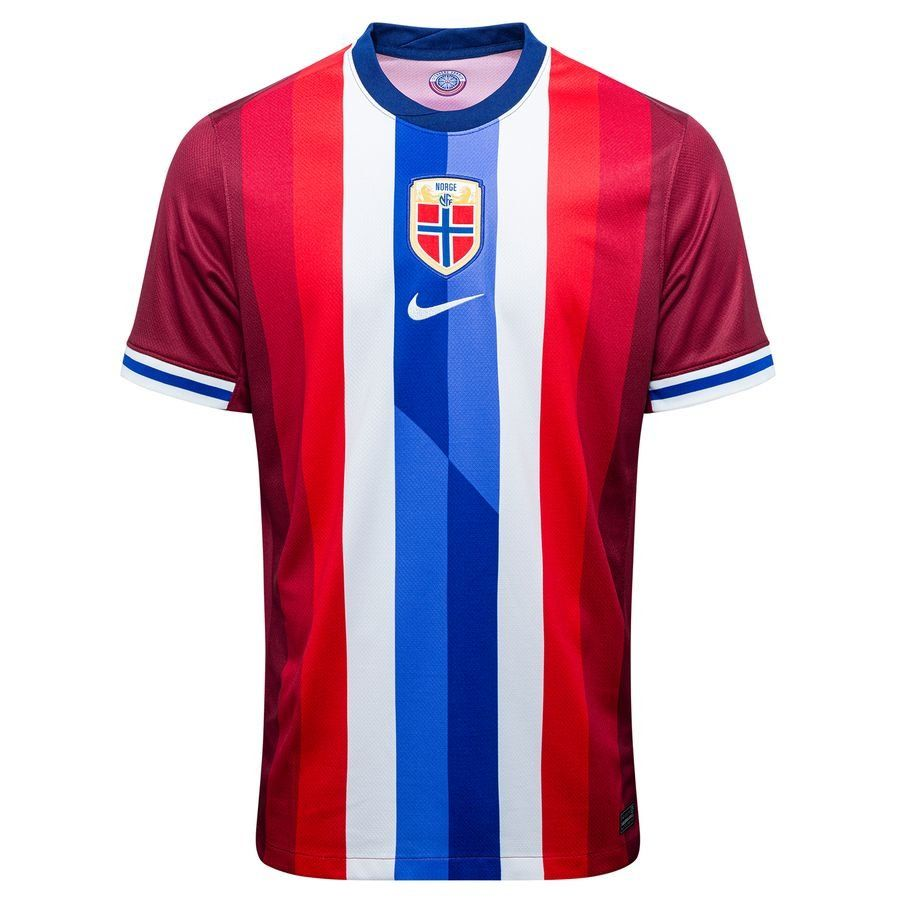

Norveška nogometna reprezentacija predstavit će svoje potpuno nove Nike dresove za sezonu 2024/25 za domaće i gostujuće dresove tijekom međunarodne prijateljske utakmice protiv Češke Republike u petak.
Norveški 24/25 Nike domaći dres crpi inspiraciju iz bogate norveške povijesti. Središte majice ima modernu interpretaciju norveške zastave, sa završetkom inspiriranim mačem. Font po narudžbi dodaje oštar, metalik dodir, povezujući različite elemente dizajna. Unutar ovratnika ponosno je prikazan moto "Sterkere Sammen", što u prijevodu znači "Zajedno smo jači".